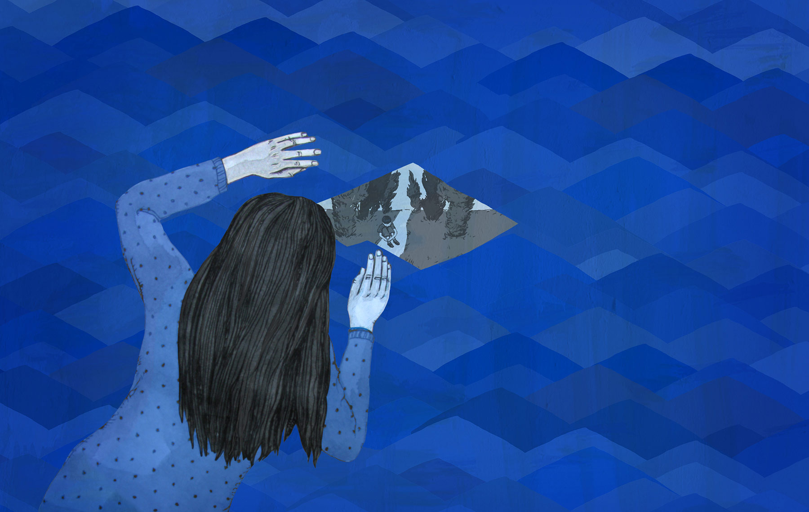
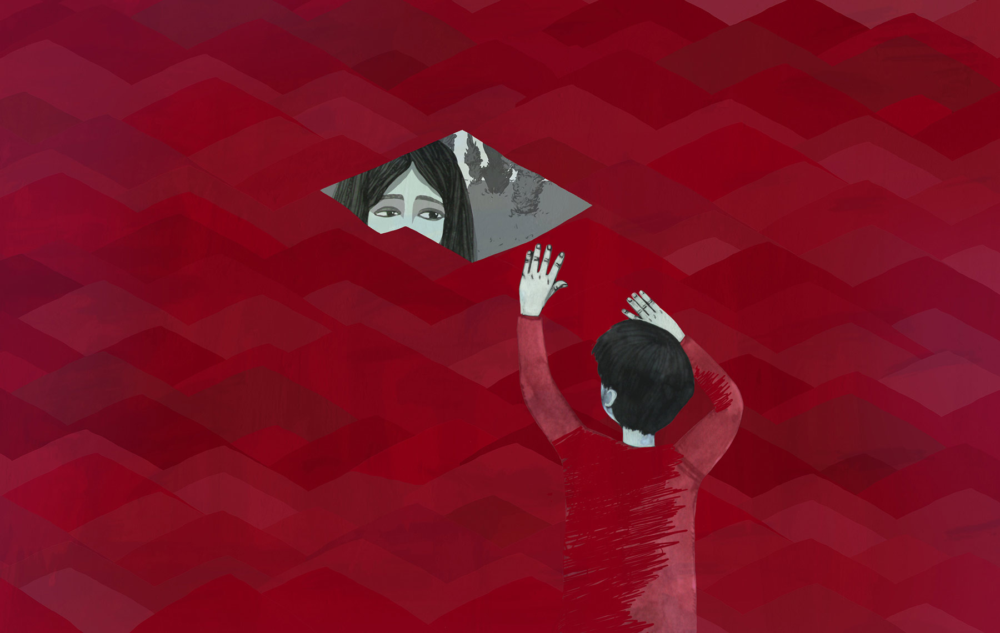

О чем мы думаем, когда слышим слово «аутизм»? Представляем себе странного, замкнутого, зацикленного на порядке и повторениях одних и тех же действий человека? Припоминаем статьи, фильмы и сериалы о людях с аутизмом, которые когда-то читали и видели? Несмотря на популярность этого феномена в масс-медиа, жизнь людей с аутизмом по-прежнему окружена предрассудками и заблуждениями. Они не рассказывают о себе, а система здравоохранения Беларуси до сих пор не признает аутизм у взрослых. Мы поговорили с представителями организации «Дети. Аутизм. Родители» Инной Белоусовой и Татьяной Яковлевой о том, почему в Беларуси нет людей с аутизмом старше восемнадцати лет, где они живут, учатся и как им можно помогать.
Людям с аутизмом, достигшим восемнадцати лет, в Беларуси снимают диагноз «аутизм» и ставят другой. Почему?
Т: Беларусь пользуется международной классификацией болезней десятого пересмотра (МКБ-10), в которой нет заболевания «аутизм» у взрослых. Члены МРЭКа (медико-реабилитационная экспертная комиссия — Прим. ред.), которые ставят диагноз, знают, что есть «аутизм», но в документе, которым они руководствуются, его нет. Поэтому они вынуждены ставить другой диагноз, чаще всего, «шизофрения». О том, чтобы обновить классификацию, говорят давно, но пока ничего не меняется. Беларусь могла бы начать пользоваться другой классификацией, но для этого у нас слишком много бюрократических комплексов. К тому же, нужно огромное финансирование для такой государственной реформы в медицине: на обучение специалистов, проведение большой документальной работы. Поэтому перспективы сейчас в пилотных проектах, частных инициативах, в том числе в регионах.
Мы сейчас реализуем проект “Happy Home” — мастерские, где будут работать люди с аутизмом; обсуждаем с медиками вопрос об участии нашей организации в МРЭКах.
Т.е. во всех странах, которые пользуются МКБ-10, аутизм у взрослых людей не диагностируют?
И: Обычно, да. Но у них много общественных инициатив, которые принимают участие в МРЭКах. МРЭК делает заключение, может человек работать или нет. Если общественная инициатива поручается за его трудоустройство, ему выдают разрешение на работу. А у нас ставят «нетрудоспособен», дают пособие, и человек сидит дома. Ему могут дать испытательный срок, только если придут родители и докажут, что есть работодатель, готовый взять их ребенка на работу.
Важно понять, что выгоднее провести реабилитацию ребенка, чем потом всю жизнь держать взрослого человека в интернате.
По вашей инициативе в Минске начали открывать интеграционные классы в школах и группы в детских садах, где дети с аутизмом учатся и общаются со сверстниками. А что предлагает государство?
Т: Вспомогательные школы-интернаты для детей с особенностями психофизического развития. Они есть по всей Беларуси. Многие дети с аутизмом их посещают. Но там нет специалистов, которые понимают и знают, как работать с такими детьми. Ребенок завернулся в ковер, потому что у него потребность в ощущениях, — и все счастливы, что он никому не мешает.
Какая ситуация с детьми с аутизмом в домах-интернатах?
И: Им тяжелее всего: они не могут, как другие, рассказать о своих потребностях. После восемнадцати лет они попадают в такой же интернат, только для людей старше восемнадцати, где их в лучшем случае просто «фиксируют», и они неподвижно сидят. А в худшем — делают укол, после которого человек лежит без движения. Там одна медсестра на девяносто человек, она не может уследить за тем, что они делают друг другу. Мингорисполком сейчас хочет внедрить проект по организации отдельного проживания и трудоустройства для сирот, достигших совершеннолетия. Но туда опять попадут люди с легкими формами заболеваний, а остальные — в обычные интернаты.
Интернат — это очень закрытая структура. Поэтому нужно действовать медленно и аккуратно: в рамках небольших проектов обучать специалистов, чтобы они хотя бы понимали поведение людей с аутизмом, могли с ними общаться. Часто у них бывают проблемы с желудком: гастриты, язвы. Человек может корчиться, биться головой о стену как в припадке просто из-за боли в животе. Ему нужна обычная «Смекта», а ему колют противосудорожное, от которого он погибает, потому что, во-первых, психика блокируется, а во-вторых, ослабевает организм, очень чувствительный к лекарствам. У нас нет лаборатории, где можно сделать анализ на чувствительность к препарату. Мы обсуждаем ее создание на уровне Минздрава. Но пока много организационных вопросов и не хватает финансов. В министерствах есть люди, которые хотят помочь, но нужно время на переосознание проблемы аутизма и правильную организацию системы помощи. Важно понять, что выгоднее провести реабилитацию ребенка, чем потом всю жизнь держать взрослого человека в интернате.

У нас есть психологи-специалисты по аутизму? Где можно этому научиться?
Т: В Беларуси нет. Можно учиться за границей (в России, Польше, США, Израиле) дистантно или очно. Для этого не требуется медицинское образование, но желательно педагогическое или психологическое. В Москве обучают в Институте психоанализа, общественные организации проводят тренинги с зарубежными специалистами. Но сертификаты, которые выдают после обучения, неофициальные. Некоторые практические врачи из «ЛОДЭ», «Экомедсервиса» за свой счет ездят на международные семинары, но их нельзя назвать специалистами по аутизму. Они могут решить одну проблему, не учитывая взаимодействие всех процессов в организме. Для полноценной помощи нужна команда медиков, в которой все понимают проблемы аутизма и принимают решение консилиумом.
Какая ситуация с аутизмом в России?
Т: Диагноз взрослым так же, как в Беларуси, не ставят. С проблемами детского аутизма немного работают в Москве (фонд «Выход»). В Санкт-Петербурге Любовь Аркус открыла центр «Антон тут рядом».
Какую помощь в идеале должен получать человек с аутизмом?
И: Это должна быть комплексная помощь на национальном уровне, межведомственный проект между министерствами труда и социальной защиты, образования и здравоохранения. Хорошо бы еще и министерства экономики и финансов включить. В первую очередь, каждому человеку с аутизмом нужна психологическая помощь. И это не просто редкое консультирование, а ежедневное «выстраивание». Чем позже с человеком начинаешь работать, тем сложнее ему приспособиться к обычной жизни. У человека с аутизмом должен быть тьютор: сопровождающий, который помогает ему социализироваться. Программы для тьютора разрабатывает психолог. Взрослым людям с аутизмом нужно помочь трудоустроиться. В странах, где прогрессивно решают проблемы людей с инвалидностью, создают государственные фонды по их трудоустройству. Каждый гражданин вносит в него процент от доходов. Каждый работодатель обязан принять на работу человека с инвалидностью. Если у него нет такой возможности, он платит больший процент в фонд. На эти деньги государство заказывает у частной или общественной организации помощь в поиске работы для людей с инвалидностью. В Беларуси приняли закон о похожей программе в январе 2013 г., но пока на это нет денег и не решен вопрос, кто должен делать заказ на трудоустройство: общественные организации, государство, люди? Его сначала приняли, а потом осознали, какие тяжелые бывают случаи, и выпустили постановление, где перечислены категории людей, которым нельзя оказывать социальные услуги. Теперь этот закон на людей с аутизмом не распространяется. Правда, говорят, временно.
По статистике международной организации “Autism Speaks”, у одного из 88 человек на планете — аутизм.
В какой стране лучшие условия для жизни людей с аутизмом?
И: Лучшие — Швеция и Канада, на третьем месте — США. Швеция — это единственная страна, где есть реальная открытая статистика и хорошо организованная система помощи. Семья, в которой родился ребенок с аутизмом, получает психологическую помощь, бесплатную медицинскую страховку. В специализированных детских садах с каждым ребенком работают сразу несколько специалистов. Иногда уже «выстроенным» людям некоторое время не снимают диагноз, потому что там ну очень классная программа поддержки. Шведские специалисты сейчас заинтересовались Беларусью, возможно, мы будем с ними работать.
Что такое аутизм и как его обнаружить?
И: Юридически — это инвалидность во всех странах. С точки зрения понимания — это психологическая проблема, часто сопряженная с проблемами со здоровьем, сенсорными обострениями. Здоровье у таких людей очень слабое, особенно если их «лечат» медикаментами.
Аутизм нельзя точно диагностировать с помощью какого-то аппарата. Есть набор черт, которые свойственны людям с аутизмом: трудности в общении, ограниченные и повторяющиеся интересы. Еще не выяснено, врожденное это, приобретенное и может ли исчезнуть. За рубежом много примеров, когда люди не говорили до 5-7 лет, а потом восстанавливались. По статистике международной организации “Autism Speaks”, у одного из 88 человек на планете — аутизм. А его форма у каждого десятого. Есть широкий спектр аутистических расстройств, и чистый аутизм в нем занимает небольшую долю.
У всех людей с аутизмом хороший интеллектуальный потенциал. Необучаемость, неотзывчивость, нежелание общения — это мифы. Они не умеют общаться, но очень этого хотят.
Когда мы встречаемся с людьми, говорящими на другом языке, мы хотим общаться, но не умеем. На каком-то этапе происходит эмоциональное пресыщение и мы закрываемся. Так же и люди с аутизмом: они прекрасно пишут, быстро начинают читать, причем сразу целыми словами. Если найти канал общения с ними, например, с помощью карточек, которые обозначают элементарные действия, они рады этому и сразу открываются.
Как проявляются сенсорные особенности человека с аутизмом?
И: Он может быть гиперчувствителен к свету, шуму, прикосновениям, слышать сразу все звуки с одинаковой силой. Утром ему может быть больно от легкого касания, а вечером у него просыпается тактильный голод, он трется, бьется обо всех, заворачивается в ковер. Для того, чтобы это скорректировать, нужно понимать, почему человек так себя ведет. В международной практике есть целое направление «сенсорная интеграция»: специалисты выявляют сенсорную особенность и исправляют ее. После этого психолог составляет индивидуальную программу эмоциональной и психической коррекции.
Когда мы встречаемся с людьми, говорящими на другом языке, мы хотим общаться, но не умеем. Так же и люди с аутизмом.
Как отражается рождение и воспитание ребенка с аутизмом на родителях?
И: Они уходят с работы, сидят дома и перестают общаться. Сначала они остаются дома, потому что не могут оставить ребенка одного, а потом наступает момент, когда они уже не хотят никуда выходить. Специалисты называют это вторичной «аутизацией» семьи. У нас в организации есть люди, которых мы никогда не видели. Родителям нужно оказывать психологическую помощь не меньше, чем их ребенку с аутизмом.
Взрослые люди с аутизмом в Беларуси чаще всего живут с родителями. Они могут жить одни?
Т: Зависит от тяжести аутизма. У нас сейчас огромный процент тяжелых случаев. Легкие формы мы не замечаем, их признаки часто списываются на черты характера: замкнутость, стеснительность. Человек живет и работает, и никто не видит, какие кризисы у него случаются.

Они могут вступать в брак?
И: Если признаны дееспособными, то да. Но есть другая проблема. Для всех нас личные отношения — это самый болезненный момент. Два психологических начала встречаются, и возникает много трений. А как эта эмоциональная боль отразится на состоянии человека с аутизмом, предсказать сложно.
Люди с аутизмом — однолюбы?
Т: Нет, но им нужно время, чтобы привыкнуть к новым людям. Они хорошо чувствуют и быстро определяют, как другие к ним относятся. Мы знаем, что новому знакомому нужно улыбнуться, послушать его. Если человеку с аутизмом неинтересно, он отворачивается и уходит. Если он понял, что подвоха ждать не нужно, он быстро открывается. Часто ребенок идет и обнимает незнакомого человека: ему просто понравилось, как тот улыбнулся.
Какой совет можно дать тем, кто впервые общается с людьми с аутизмом?
Т: Не бояться их, быть спокойным и уверенным. Они очень искренние, непосредственные, не умеют врать. И всегда находят, за что вас полюбить.
Если вы хотите помочь организации «Дети. Аутизм. Родители», звоните по тел +375 44 500 04 55. Сайт: http://www.autism.by/
Расчетный счет организации: № 3015301610012 в ЗАО Банк ВТБ (Беларусь), код 108. УНН 101437167. Получатель платежа - МБОО "Дети.Аутизм.Родители".